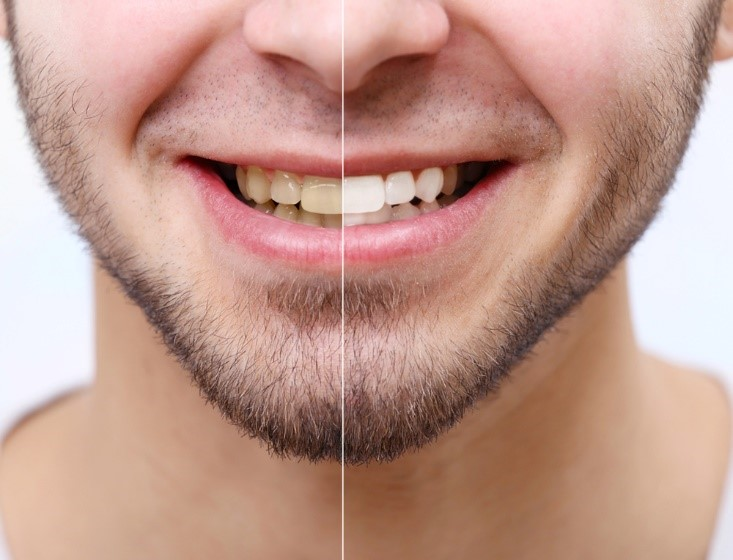
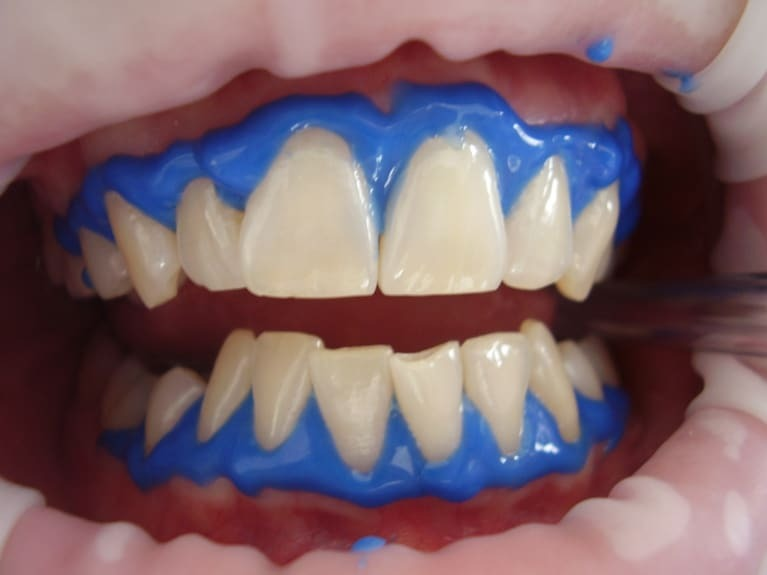
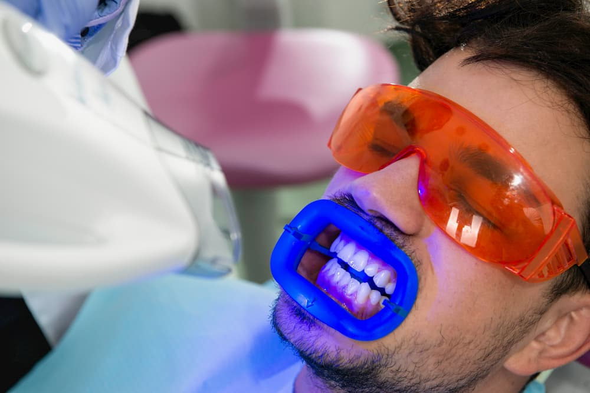

Dental Publications
This article explains the latest dental treatment techniques, and the most successful preventive measures for enjoying strong healthy teeth, in addition to dental implants, dental bridges, orthodontics, and other miscellaneous information

Best teeth whitening method in turkey prices 2021
Table of Content
- What does teeth whitening do?
- What is the best teeth whitening method in Turkey?
- Laser teeth whitening treatment
- Result teeth whitening before and after in Turkey
- FAQ for teeth whitening
- Can teeth whitening damage gums?
- Why teeth whitening cause sensitivity?
- Laser teeth whitening, is it safe?
- Does teeth whitening damage your teeth?
- Will teeth whitening remove stains?
- Will teeth whitening work on crowns?
- Will teeth whitening damage crowns?
- Will teeth whitening damage my teeth?
- Will teeth whitening work on fillings?
- Will teeth whitening damage enamel?
- Will teeth whitening work on veneers?
What does teeth whitening do?
Teeth whitening is the process of lightening the color of the teeth.
Teeth whitening can be a very effective way to lighten the natural color of the teeth without removing the tooth surface.
People often want super white teeth especially when teeth turn yellowish and stained over time for different reasons.

Why teeth whitening is important?
Because whiter teeth boost confidence, improve your smile, and make you look good.
Teeth whitening risks and side effects
Just like any other procedure teeth whitening have some risks and side effects which includes:
- Anterior teeth fillings may hinder desired results.
- Tooth sensitivity.
- The results are not permanent.
- Excessive bleaching may cause erosion of the enamel and unpleasant permanent color change and pain.
- Changing the diet and avoiding certain foods.
What is the best teeth whitening method in Turkey?
Turkey and Ilajak Medical are well-known for using the latest apparatuses and technology in teeth whitening.
Teeth can be whitened in several ways, and below are the two most common methods:
The first method: You need to make several visits to the dentist for two months.
The dentist will take a dental impression to make a mouthpiece and tell you how to use it with the whitening gel.
Then, using an at-home mouth tray, you apply the gel regularly for a time that extends from two to four weeks, and some types of whitening gel can be left for up to eight hours at a time, which shortens the treatment period to one week.
The second method: Laser whitening, also known as power whitening, which is another method of teeth whitening that is provided by a dentist, where the whitening product is placed on the teeth and then a light or laser is directed on them to activate the bleaching, this laser whitening method takes about an hour with immediate effects.

Teeth whitening procedure before and after
Before a teeth whitening treatment, the focus is on protecting your teeth and gums as much as possible, to reduce the chances of post-treatment sensitivity.
The night before the morning of the treatment, brush your teeth very gently, taking care to avoid the gums as much as possible.
This will reduce the chances of scratching the gum line.
Do not use flossing as it may cut your gums causing you discomfort after the treatment.
It's okay to use regular mouthwash.
There is no need to avoid food before a teeth whitening treatment, except that you will not be able to eat for a few hours after your appointment, so eat a meal before that to keep feeling full.
When the teeth whitening session is complete, you will need to restrict your diet to refine fluids for at least two hours, and after this time has passed, you can eat any type of white food that does not stain the teeth.
An easy way to determine if you can eat a certain food is to think about whether it will stain a white shirt, and if so, avoid it.
For the first two days after treatment, brush your teeth gently with a white toothpaste that does not contain bleaching ingredients or baking soda.
After forty-eight hours, you can resume your usual diet but bear in mind that new staining can occur when you consume coffee, other foods, and drinks. Dark-colored.
Laser teeth whitening treatment
Laser teeth whitening is a procedure in which a whitening product is applied to the teeth and then a laser is applied to activate the whitening process; As the thermal energy from the laser works to whiten the teeth.
Laser teeth whitening is the most effective way for fast results.
Laser whitening takes about an hour.
Laser teeth whitening cost
The cost of teeth whitening in Turkey ranges from two hundred to six hundred euros and varies according to the condition of the teeth and the technology and products used.
Laser teeth whitening procedure
- First, a gel is applied to the gums which will harden into a rubber-like barrier, which will protect them from irritation and harm.
- Next, a whitening product is applied to each tooth, and heat generated by a laser enhances the whitening power of the hydrogen peroxide solution.
Treatments typically last one hour with same-day results.
How long does laser teeth whitening last?
Teeth whitening is not permanent.
It can last from a few months to three years, and it varies from person to person.
Food and drinks that stain the teeth, such as tea, coffee, and others, in addition to smoking, shorten the time for which teeth can remain white.
Result teeth whitening before and after in Turkey
Teeth whitening is a suitable option for individuals who wish to have super white teeth, shiny and free of stains.
Results vary greatly from person to person, with many being immediately pleased with their results, while others may be disappointed.
There is no doubt that Turkey today is one of the leading and the best medical service providers in the world, with reasonable prices and high quality.
We in Ilajak Medical work to provide the best results and achieve healthy, bright white teeth everyone has dreamt of.

FAQ for teeth whitening
Can teeth whitening damage gums?
NO, The protecting gel is applied to protect gums from any harm.
Why teeth whitening cause sensitivity?
The chemicals and solutions used result in the removal of minerals within the enamel which makes the teeth temporarily porous, exposing microtubules within the teeth.
Laser teeth whitening, is it safe?
Yes, If the protocols and instructions are strictly followed by a professional and experienced dentist.
Does teeth whitening damage your teeth?
No, the products and chemicals designed for teeth whitening do not cause any damage if used wisely by experienced professionals.
Will teeth whitening remove stains?
Yes, if stains are on the outer surface, but if stains go below the outer surface, you should think of porcelain veneers and crowns.
Will teeth whitening work on crowns?
Whitening treatments do not affect crowns, it only affects natural teeth.
Will teeth whitening damage crowns?
No, Teeth whitening will not damage dental restorations like crowns and veneers, because they are made of extremely strong materials and highly resistant to bleach.
Will teeth whitening damage my teeth?
No, Teeth whitening products do not damage natural teeth, if used responsibly by a professional dentist.
Will teeth whitening work on fillings?
No, Teeth whitening doesn’t work on fillings, crowns, or veneers, it works on natural teeth only.
Will teeth whitening damage enamel?
No, Teeth whitening does not damage enamel.
Will teeth whitening work on veneers?
No, Teeth whitening works on natural teeth only and does not affect crowns, fillings, or veneers.
Latest Articles, Health News, Clinical Research, and more.
Keratoconus and cataracts , symptoms and types
What is Keratoconus, How it looks and what are the symptoms? Also, find out Keratoconus’s types and stages , Learn more with ILAJAK Medical.
Best Spa Resorts with Medical Services clinics in Turkey.
In this article, we will learn about the importance of health resorts and the treatment services they offer and the top and famous health & medical resorts in Turkey
Zirconia teeth type and costs in Turkey 2021
Zirconia dental crowns and bridges are used to treat and protect the affected teeth due to decay or fractures, etc, In this article we will learn about the advantages and drawbacks of Zirconia Crowns and bridges
Benefits of porcelain teeth and costs in Turkey 2021
Porcelain crowns and veneers are used to strengthen and protect damaged teeth due to decay or cracks or any other reason. In this article, we will discover dental porcelain and its advantages and risks.